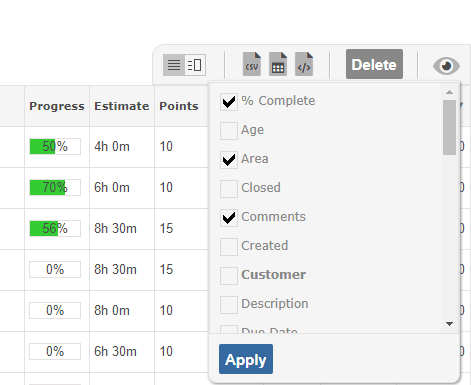
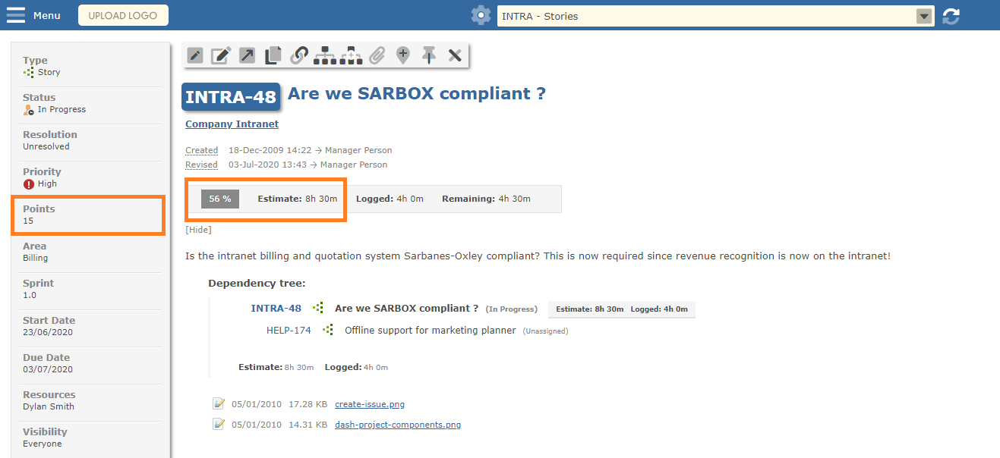
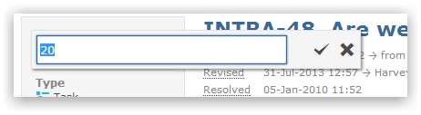

To aid sprint planning it can be helpful to size work items. Work sizing helps teams determine which items can be realistically completed during a sprint.

Estimates are time based and specify how much time (or effort - points) is required to complete a task.
When viewing an item, Estimate and Points values can be seen and set.

You can click on the field to change the value.

NoteScreen, Project Template or Permissions can be used to determine who see/edit Estimate and Points fields